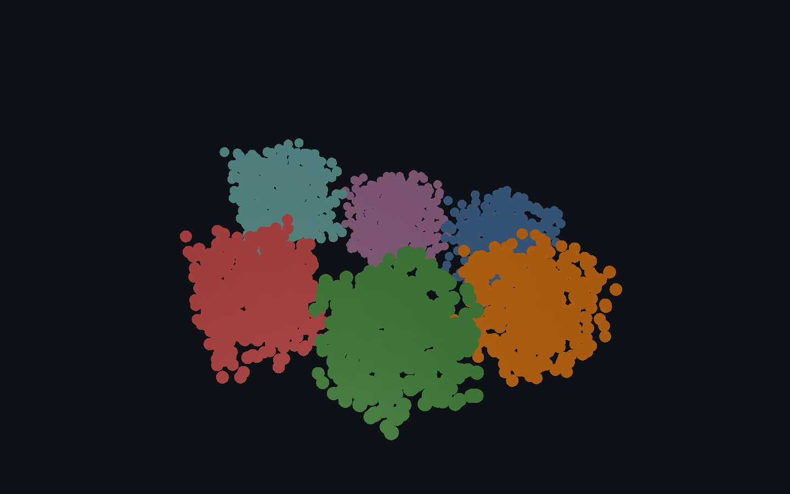
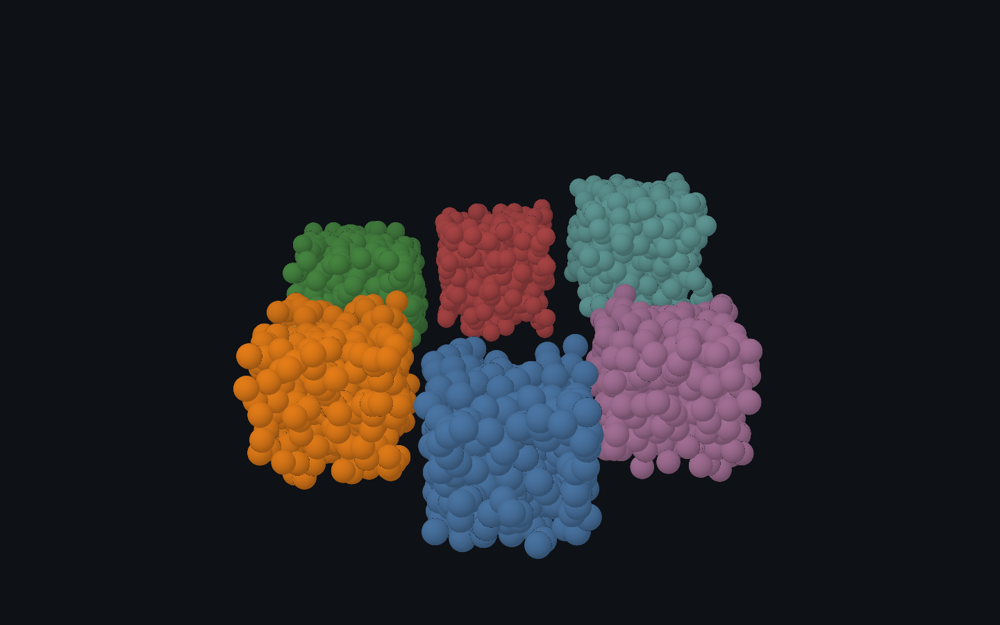
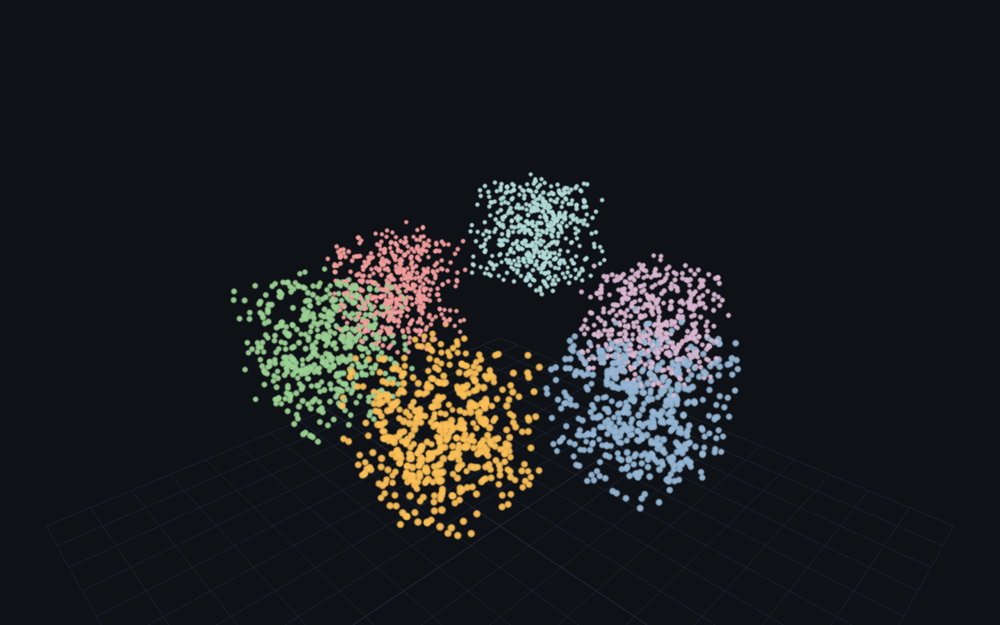

A true 3D scene — perspective camera, orbit interaction, depth. Native in three.js and deck.gl (OrbitView) and in Helios (2D is its default mode); Sigma is 2D by design. The cosmos.gl engine gains 3D in the author’s experimental @cosmograph/cosmos fork, measured on the 3D / manifold page.

Rendered on the real GPU and gate-verified — it draws, and the pixels change when the camera moves (not a frozen frame). Held 120 fps at 3,000 points.

Rendered on the real GPU and gate-verified — it draws, and the pixels change when the camera moves (not a frozen frame). Held 120 fps at 3,000 points.

Rendered on the real GPU and gate-verified — it draws, and the pixels change when the camera moves (not a frozen frame). Held 120 fps at 3,000 points.
| Library | Support | Notes |
|---|---|---|
| deck.gl | ✓ native · verified | OrbitView + PointCloudLayer — deck's native 3D camera over binary typed-array attributes (the same pattern as the 3D benchmark). |
| Sigma.js | — none | 2D by design — the camera is a 2D pan/zoom transform over an x/y graph; no perspective or z axis. |
| cosmos.gl | ◑ plugin · verified | Via the author's experimental 3D fork @cosmograph/cosmos (spaceDimensions: 3 — perspective orbit camera, sphere-shaded points), not in mainline @cosmos.gl/graph. Benchmarked on the 3D / manifold page. |
| three.js | ✓ native · verified | A 3D engine outright — perspective camera, OrbitControls, depth-sorted scene; size-attenuated point sprites. |
| Helios-Web | ✓ native | Renders 3D natively (use2D: false; xyz node positions and a 3D camera). The 2D mode used in the graph benchmark is the same engine flattened. |